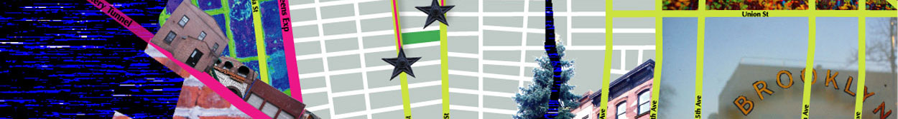

Jonathan E. Levy
EXPERIENCE
Antenna International
Interactive Designer and Cartographic Expert, April 2013 - present
-
Working with organizations to represent their brand and collections through interactive tour apps for iOS and Android devices
-
Consult and contribute expertise on geolocation, outdoor and indoor wayfinding and data visualization
JL Cartography
Cartographer, September 2011 - April 2013
-
Conduct geographic analysis and geodata production for Airbnb’s “Neighborhoods” initiative for 20 cities across the United States
-
Oversee interactive mapping projects for the New Museum of Contemporary Art and TED.com. Produce print maps for the New York Observer
New York City Department of Education Office of Pupil Transportation
Geographic Information Systems Analyst and UI Designer, April 2010 – September 2011
-
Managed a network analysis project the product of which is an automated routing system using ArcGIS Spatial Analyst
-
Developed UI/UX for web map portal for citywide pupil transportation
-
Allowed for better visualization of data for bus routing but also exposed how buses were routed, giving management more visibility into how a $1 billion budget is spent
Not For Tourists (NFT) Guidebooks
Lead Cartographer, August 2007 – April 2011
-
Managed staff of city editors internationally in the creation of geographic data and coordination of map design
-
Created international neighborhood maps for award winning guidebooks of Paris, London, Seattle, Berlin, New York and Boston
li>
Implemented ArcGIS into the daily operations of the company
*disclaimer: this ain't real, its for a class :)
JL Cartography